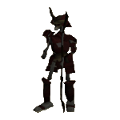
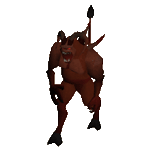

")
Die Herausforderung
Einführung | Lage | Voraussetzungen | Empfohlene Ausrüstung | Die Herausforderer | Belohnungen | Entwicklung
Nur RuneScape-Mitglieder haben Zugang zu diesem Zwischendurch-Ereignis. Wenn ihr euch anmeldet, könnt auch ihr dieses Feature nutzen.
Bitte beachtet, dass es sich hierbei um ein 'gefährliches' Ereignis handelt. Falls ihr dabei sterbt, werdet ihr eure Gegenstände verlieren.
Einführung

Am Rand der Arena sitzen ein paar mysteriöse Gestalten, die "Champions der Champions". Einer dieser mächtigen Champions wird euch eventuell herausfordern, nachdem ihr einige der schwächeren Champions besiegt habt.
Die schwächeren Champions verdienen es nicht, in der Arena Platz nehmen zu dürfen, fordern euch aber heraus, wenn ihr als Feind ihres Volks bekannt geworden seid. Wenn ihr gegen alle möglichen Monster auf RuneScape kämpft, kommt es gelegentlich vor, dass eins eine Nachricht von einem Champion fallen lässt, in dem ihr zu einem Duell herausgefordert werdet.

Sobald ihr einmal herausgefordert wurdet, müsst ihr die Schriftrolle nur zur Arena mitnehmen und auf euer Duell warten. Sobald ihr einen der schwächeren Champions bekämpft und besiegt habt, werdet ihr von dem jeweiligen Volk nicht mehr herausgefordert.
Lage
Die Arena, in der die Champion-Herausforderungen stattfinden, befindet sich unter der Gilde der Champions. Um diesen Bereich zu betreten, muss man die Falltür unter der Treppe benutzen.
Mit dem Armband der Kämpfer könnt ihr euch direkt zur Gilde teleportieren.
Voraussetzungen
Ihr benötigt 33 Abenteuerpunkte, um die Gilde der Champions zu betreten.
Empfohlene Ausrüstung
Jedes Duell unterliegt bestimmten Regeln, die vom jeweiligen Champion bestimmt werden.
Wenn man beispielsweise gegen den Rubindämon-Champion kämpft, darf man keine Waffen benutzen oder Rüstzeug tragen.
Anmerkung: Falls ihr in der Arena der Champions sterben solltet, zählt das wie ein normaler Tod. Ihr verliert also Gegenstände und werdet in Lumbridge, Falador, Camelot oder beim Krieg der Seelen wiederbelebt.
Die Herausforderer
Sobald ihr die Arena betreten habt, werdet ihr auf den Torwächter Larxus treffen. Er ist euer Ansprechpartner, wenn es um die Duelle mit den Champions geht. Er hat auch einen Probekampf mit dem Wichtel-Champion für euch im Angebot, wenn ihr mal ein Duell mit einem Champion ausprobieren möchtet. Für diese Herausforderung benötigt ihr keine Schriftrolle - genausowenig wie Gegenstände, die in diesem Duell verboten sind.
| Monster | Stufe | Bedingung |
![[Bild]](../../img/main/kbase/minigames/champions/challenge_leprechaun.gif) Wichtel |
32 | Keine Gegenstände. |
Larxus nimmt die Herausforderung des Champions von euch entgegen, also benutzt einfach die Schriftrolle mit ihm, wenn ihr für den Kampf bereit seid. Er informiert euch dann darüber, dass ein Champion des entsprechenden Volks euch zu einem Duell herausgefordert hat und dass dieser für das Duell bereit ist. Nachdem er euch die Bedingungen des Duells mitgeteilt hat, könnt ihr euch ein letztes Mal dagegen entscheiden. Falls ihr aber einwilligt, geht ihr durch eine Falltür hinter der Champion-Statue und betretet die Arena. Geht durch die Tür, um den Kampf zu beginnen.
Wenn ihr mehr und mehr Champions (durch fallen gelassene Schriftrollen) besiegt habt, kann es sein, dass ihr von einem der einzigartigen Champions der Champions herausgefordert werdet.
| Monster | Stufe | Bedingung |
![[Bild]](../../img/main/kbase/minigames/champions/champion_imp.gif) Kobold |
14 | Kein Spezialangriff. |
![[Bild]](../../img/main/kbase/minigames/champions/champion_goblin.gif) Goblin |
24 | Nur magische Angriffe. |
|  Skelett |
40 | Nur Fernkampf-Angriffe. |
![[Bild]](../../img/main/kbase/minigames/champions/champion_zombie.gif) Zombie |
51 | Keine magischen Angriffe. |
![[Bild]](../../img/main/kbase/minigames/champions/champion_giant.gif) Riese |
56 | Nur Nahkampf-Angriffe. |
![[Bild]](../../img/main/kbase/minigames/champions/challenge_hobgoblins1.gif) Hobgoblin |
56 | Keine Nahkampf-Angriffe. |
![[Bild]](../../img/main/kbase/minigames/champions/champion_ghoul.gif) Ghul |
85 | Nur Waffen, keine Gegenstände. |
![[Bild]](../../img/main/kbase/minigames/champions/champion_earth_warrior.gif) Erdkrieger |
102 | Keine Gebete. |
![[Bild]](../../img/main/kbase/minigames/champions/champion_jogre1.gif) Dschoger |
107 | Keine Fernkampf-Angriffe. |
|  Rubindämon |
162 | Keine Waffen und kein Rüstzeug. |
Die Champions der Champions
Wenn ihr eine bestimmte Anzahl von Champions (durch fallen gelassene Schriftrollen) besiegt habt, werdet ihr von einem der Champions der Champions zum Kampf herausgefordert. Beweist eure Tapferkeit und besiegt sie von Angesicht zu Angesicht.
Belohnungen
![[Bild: Bannerträger]](../../img/main/kbase/minigames/champions/imp_follower.jpg "Sieg über einen Champion") Wenn ihr einen Champion besiegt, erhaltet ihr Erfahrung sowohl in Berserker als auch in Lebenspunkten. Wie viel Erfahrung ihr erhaltet, hängt von den Lebenspunkten des jeweiligen Champions ab.
Wenn ihr einen Champion besiegt, erhaltet ihr Erfahrung sowohl in Berserker als auch in Lebenspunkten. Wie viel Erfahrung ihr erhaltet, hängt von den Lebenspunkten des jeweiligen Champions ab. Außerdem könnt ihr zu Larxus gehen, der 'Rufperlen' für diejenigen bereithält, die einen Champion besiegt haben. Wenn man sie benutzt, wird ein Bannerträger herbeigerufen - ein treuer Begleiter, der eure Leistungen in der 'Herausforderung' verkündet. Für jeden Champion gibt es ein Banner, einschließlich der Champions der Champions. Ihr könnt also mit allen Champions, die ihr besiegt habt, protzen - oder einfach die Zahl der Champions anzeigen lassen, die ihr auf dem Gewissen habt. Um euer Banner ändern zu lassen, sprecht einfach mit dem Kobold oder benutzt die Rechtsklickoption und wählt 'Banner ändern' aus.
Jedes Mal, wenn ihr ein Duell gewonnen habt, zu dem ihr durch eine Schriftrolle herausgefordert wurdet, erscheint an der äußeren Wand der Arena ein Wandbanner. Je mehr Champions ihr besiegt, desto mehr Banner erscheinen.
![[Bild]](../../img/main/kbase/minigames/champions/champ_banners1.gif)
Entwicklung
| Überarbeitung | |||
| Entwicklung: | Graham B | Entwicklung: | Frederique M |
| Qualitätssicherung: | Andy C | Qualitätssicherung: | Thomas H, Reece W, James N, Liam H |
| Grafik: | Joe R, Nick F, Linh N | Grafik: | Mark B, James W |
| Audio: | Ian T | Audio: | -- |

Weitere Artikel in Spaß für zwischendurch
|
|
|
Weiterführende Informationen Wenn euch dieser Artikel nicht weitergeholfen hat, könnt ihr in den folgenden Kapiteln der RuneScape-Webseite mehr Informationen finden:
|
|